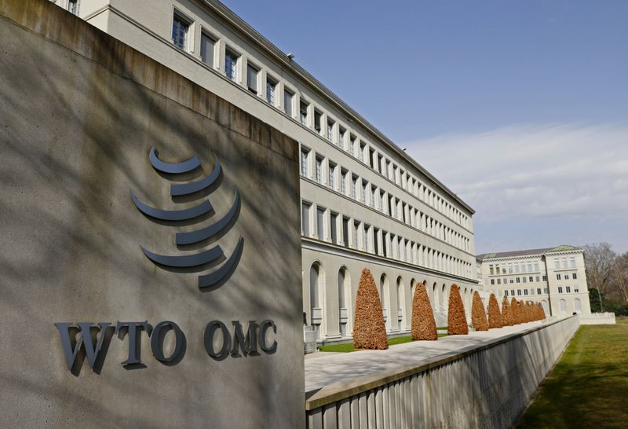

U.S. appeals WTO decision in South Korea trade dispute, official says
GENEVA (Reuters) – The United States has appealed against a World Trade Organization recommendation that Washington revise a series of duties imposed on South Korea under then President Barack Obama, a WTO official said on Friday.
The appeal pushes the case into legal limbo along with some 18 others, several of them involving the United States, because the WTO lacks a functioning appellate body.
The U.S. decision on whether to comply with the recommendation on the South Korea duties or lodge an appeal had been seen as an early indicator of U.S. President Joe Biden’s approach to the WTO and its dispute settlement system.
Under President Donald Trump, the U.S. administration blocked appointments to the appeals body, leaving it with too few adjudicators to rule.
The U.S. mission in Geneva did not immediately comment on the appeal.
A WTO panel recommended in January that the duties on South Korea – imposed on four grades of steel in 2016 and on large power transformers in 2012 – be revised.
The three-person WTO panel found that the U.S. Department of Commerce failed to take into account all the information available when it calculated the level of dumping or subsidies.
The tariffs on transformer makers Hyosung Heavy Industries Corp and Hyundai Electric Energy Systems Co and steelmakers from Hyundai Steel and POSCO were inconsistent with WTO rules, the panel said.
The case was later joined by the European Union, which said steel producers from several EU member states had also suffered from Commerce Department practices.
South Korea however failed to convince the panel that U.S. authorities had an 'unwritten measure' of using the most adverse facts available in order to maximise duties, where an exporter had failed fully to cooperate.
(Reporting by Philip Blenkinsop and Emma Farge; Editing by Nick Tattersall)
Posted On: 2021-03-19T00:00:00

Content Date: 2021-03-19
Download Date: 2021-04-17
Document ID: L0C04A6RV